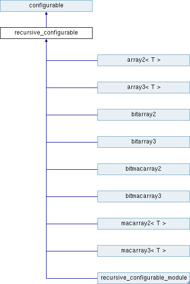

|
潮風フレームワーク
研究開発に特化したコンピューターグラフィックスのための流体ソルバ
|


|
|
潮風フレームワーク
研究開発に特化したコンピューターグラフィックスのための流体ソルバ
|
|
複数の子供 configurable を保持する configurable クラスの拡張。 [詳解]
#include <configurable.h>

クラス | |
| class | environment_setter |
| 環境を設定するクラス。 [詳解] | |
公開メンバ関数 | |
| recursive_configurable ()=default | |
| デフォルトコンストラクタ。 | |
| virtual void | recursive_load (configuration &config) |
| 自身のプログラムを読み込み、子供インスタンスにも同様の処理を行う。ファイルやライブラリをメモリに読み込むことに使われる。 [詳解] | |
| virtual void | recursive_configure (configuration &config) |
| プログラムの設定を実際に行い、子供インスタンスにも同様の処理を行う。パラメータの読み込みと設定に使われる。 [詳解] | |
| virtual void | recursive_initialize (const configurable::environment_map &environment=configurable::environment_map()) |
| プログラムの初期化を行い、子供インスタンスにも同様の処理を行う。実際にプログラムを実行可能な状態を作るために使われる。 [詳解] | |
| virtual bool | is_ready () const |
| インスタンスが初期化されているか取得する。 [詳解] | |
| virtual void | add_child (configurable *child) |
| 子供インスタンスを追加する。 [詳解] | |
| virtual void | add_child (recursive_configurable *child) |
| 子供インスタンスを追加する。 [詳解] | |
| virtual void | remove_child (configurable *child) |
| 子供インスタンスを削除する。 [詳解] | |
| virtual void | remove_child (recursive_configurable *child) |
| 子供インスタンスを削除する。 [詳解] | |
| virtual void | setup_now (configuration &config=get_global_configuration()) override |
| recursive_load - recursive_configure - recursive_initialize のプロセスを呼ぶ。 | |
| virtual bool | not_recursive () override |
| recursive_configurable から継承されたインスタンスでないか確認する。 [詳解] | |
| void | set_environment (std::string name, const void *value) |
| 入力名に関連した環境変数の値へのポインターを設定する。 [詳解] | |
 基底クラス configurable に属する継承公開メンバ関数 基底クラス configurable に属する継承公開メンバ関数 | |
| virtual void | load (configuration &config) |
| プログラムを読み込む。ファイルやライブラリをメモリに読み込むことに使われる。 [詳解] | |
| virtual void | configure (configuration &config) |
| プログラムの設定を実際に行う。パラメータの読み込みと設定に使われる。 [詳解] | |
その他の継承メンバ | |
| 基底クラス configurable に属する継承公開型 | |
| using | environment_map = std::map< std::string, const void * > |
| environment_map のタイプ。 | |
| 基底クラス configurable に属する継承静的公開メンバ関数 | |
| static configuration & | set_global_configuration (const configuration &config) |
| グローバルの設定を与える。 [詳解] | |
| static configuration & | get_global_configuration () |
| グローバルの設定を取得する。 [詳解] | |
| template<class T > | |
| static const T & | get_env (const environment_map &environment, std::string key) |
| 入力の環境のインスタンスから、指定された種類のポインターを取得する。 [詳解] | |
| 基底クラス configurable に属する継承限定公開メンバ関数 | |
| bool | check_set (const environment_map &environment, std::vector< std::string > names) |
| 変数のキーの配列に対応する値が存在するか取得する。 [詳解] | |
複数の子供 configurable を保持する configurable クラスの拡張。
|
inlinevirtual |
子供インスタンスを追加する。
| [in] | child | 追加する子供インスタンスへのポインター。 |
|
inlinevirtual |
子供インスタンスを追加する。
| [in] | child | 追加する子供インスタンスへのポインター。 |
|
inlinevirtual |
インスタンスが初期化されているか取得する。
もしインスタンスが初期化されていれば true を返し、そうでなければ \false を返す。
|
inlineoverridevirtual |
|
inlinevirtual |
プログラムの設定を実際に行い、子供インスタンスにも同様の処理を行う。パラメータの読み込みと設定に使われる。
| [in] | config | 設定を管理する configuration のインスタンスへの参照。 |
recursive_configurable_moduleで再実装されています。
|
inlinevirtual |
プログラムの初期化を行い、子供インスタンスにも同様の処理を行う。実際にプログラムを実行可能な状態を作るために使われる。
| [in] | config | 設定を管理する configuration のインスタンスへの参照。 |
drawableで再実装されています。
|
inlinevirtual |
自身のプログラムを読み込み、子供インスタンスにも同様の処理を行う。ファイルやライブラリをメモリに読み込むことに使われる。
| [in] | config | 設定を管理する configuration のインスタンスへの参照。 |
recursive_configurable_moduleで再実装されています。
|
inlinevirtual |
子供インスタンスを削除する。
| [in] | child | 削除する子供インスタンスへのポインター。 |
|
inlinevirtual |
子供インスタンスを削除する。
| [in] | child | 削除する子供インスタンスへのポインター。 |
|
inline |
入力名に関連した環境変数の値へのポインターを設定する。
| [in] | name | 設定する環境変数への名前。 |
| [in] | value | 設定する変数の値へのポインター。 |
 1.8.17
1.8.17